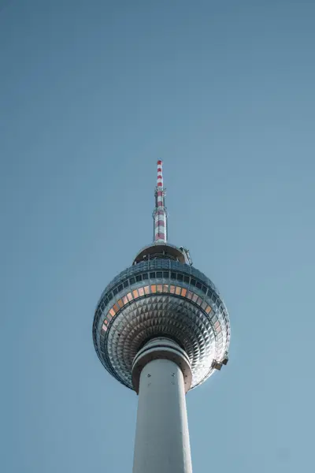
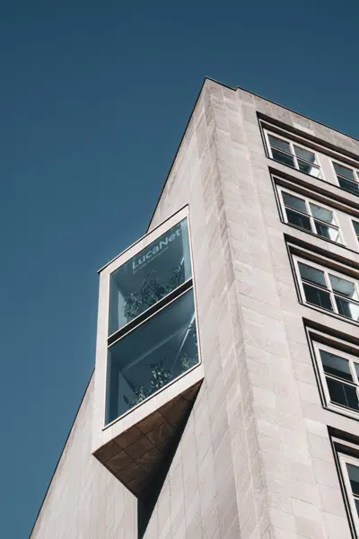
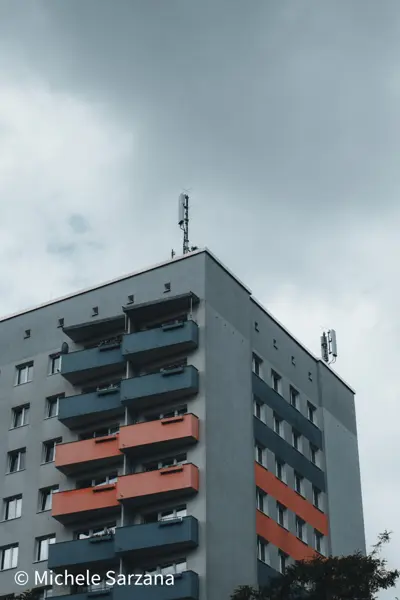
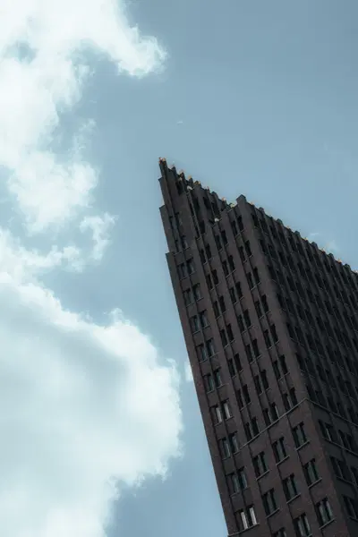
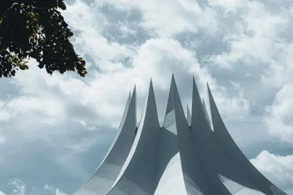

Leggere una fotografia
Prima di costruire un progetto bisogna saper guardare le foto, le proprie e quelle degli altri. Davanti a un'immagine prova a rispondere in ordine:
- Cosa vedo? Descrivi senza giudicare. Soggetto, luce, colori, spazio.
- Come è fatta? Focale, punto di vista, composizione, momento.
- Cosa mi fa sentire? E quali scelte producono quell'effetto.
- Cosa toglierei? La domanda più utile per le proprie foto.
Guarda molti libri di fotografia. Non i social, dove le foto passano in un secondo, ma libri e mostre, dove una sequenza è stata pensata da qualcuno.
Scegliere
L'editing, nel linguaggio dei fotografi, non è la post-produzione. È la scelta. Da cento foto di un'uscita, quante meritano di essere viste? Spesso tre o quattro.
- Separa le emozioni dai risultati. Una foto può ricordarti un momento bellissimo ed essere debole. Il ricordo è tuo, non di chi guarda.
- Lascia riposare. Riguarda le foto dopo una settimana. Molte che ti sembravano forti non lo sono più.
- Tieni una sola versione di ogni scena. Tre foto quasi uguali indeboliscono la migliore.
- Chiedi a qualcuno di cui ti fidi. Una seconda opinione onesta vale più di cento cuori.
Costruire una serie
Una serie è un gruppo di foto che insieme dicono qualcosa che nessuna dice da sola. Ha un tema, una coerenza visiva e un ordine.






- Il tema si dice in una frase. Se servono tre frasi, sono più serie.
- La coerenza nasce da scelte ripetute: stessa luce, stessa distanza, stessi colori, stesso formato.
- La varietà tiene vivo lo sguardo: alterna campi larghi e dettagli, pieni e vuoti.
- Da 8 a 20 foto sono una misura buona per iniziare.
La sequenza
L'ordine cambia il significato. Due foto accostate creano un terzo senso che nessuna delle due aveva.
- Apri con forza, con una foto che dica il tema.
- Chiudi con una foto che resti, non necessariamente la più bella.
- Accosta per somiglianza di forma, colore o direzione. O per contrasto.
- Stampa piccolo e disponi le foto su un tavolo. Spostarle con le mani è il modo migliore per trovare l'ordine.
Portfolio e stile
Lo stile non si cerca. Si riconosce, guardando indietro, nelle scelte che fai sempre. Un portfolio serve a renderle visibili.
- Poche foto, le migliori. Un portfolio è giudicato dalla foto più debole.
- Una o due serie valgono più di un elenco di generi diversi.
- Aggiornalo ogni anno. Toglierai più foto di quelle che aggiungi.
Stampare
Una foto stampata è un'altra foto. Si vede la grana, la carta, il dettaglio. Stampare almeno le foto migliori è il modo più onesto di giudicarle.
Gestione del colore
- Calibra il monitor con un colorimetro. Uno schermo troppo luminoso è la causa numero uno delle stampe scure.
- Usa il profilo ICC della combinazione stampante e carta. I laboratori seri lo forniscono.
- Prova colore a schermo, il soft proofing. Ti mostra in anticipo come la foto apparirà su quella carta.
Dimensioni
Per una stampa da vicino si calcolano circa 300 pixel per pollice, cioè circa 118 pixel per centimetro. Un file da 6000 pixel di lato lungo stampa bene fino a circa 50 centimetri. Per stampe grandi, guardate da lontano, ne bastano molti meno.
La carta
| Carta | Carattere |
|---|---|
| Lucida | Colori brillanti e neri profondi, molti riflessi |
| Semilucida, lustre | Il compromesso più usato |
| Opaca fine art | Morbida, senza riflessi, toni più delicati |
| Baritata | La resa della stampa tradizionale in bianco e nero |
Esercizio
Qualche settimana, a tappe
La tua prima serie
- Scrivi un tema in una frase, legato a un luogo che puoi frequentare spesso.
- Fotografalo in almeno cinque uscite diverse.
- Scegli 12 foto. Stampale piccole, anche su carta normale.
- Trova l'ordine su un tavolo. Togli ancora due foto.
- Fai stampare in laboratorio le tre migliori, in formato almeno 20 × 30 cm.